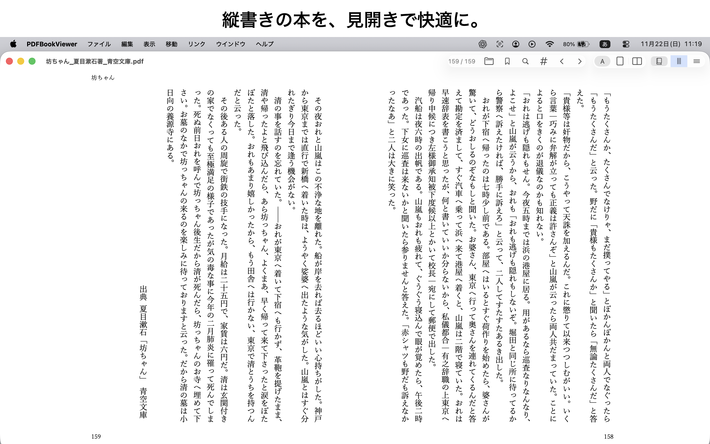
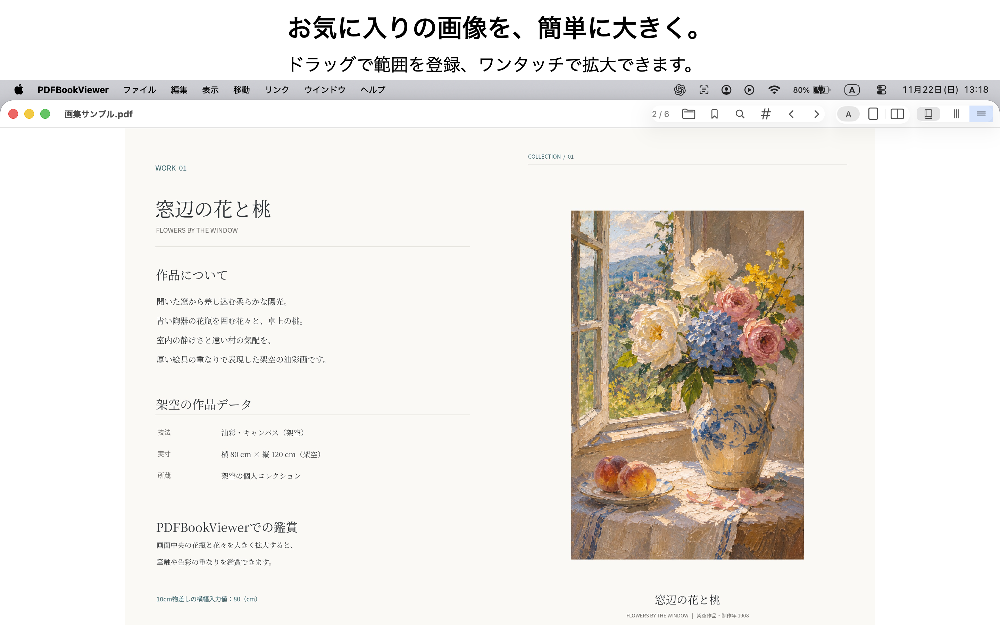
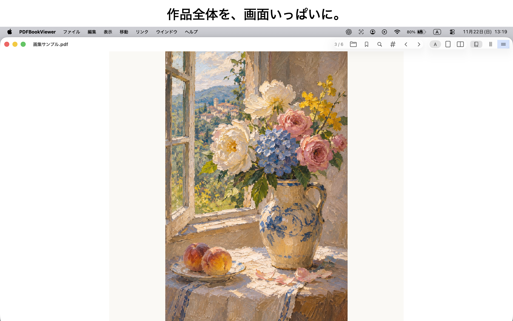
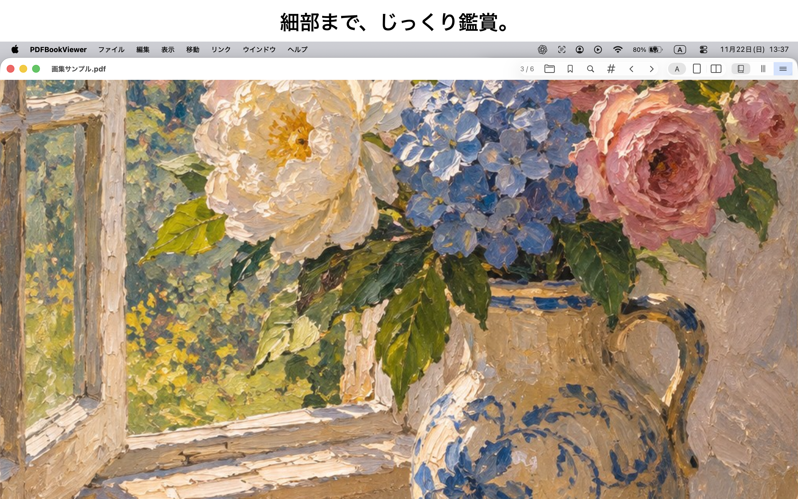

縦書きの本を、見開きで快適に。
PDFBookViewerは、PDF化された書籍などを快適に読むための macOS用PDFビューアです。
高速なページ送りと、PDFの表示領域を最大限に確保する シンプルな画面構成を特徴としています。 縦書きの書籍だけでなく、横書きの書籍や画集、 写真集などの閲覧にも対応しています。

キーボードやツールバーのボタンなどから、 軽快にページを移動できます。
余分なUIを抑え、ページ間の隙間もなくすことで、 PDFをできるだけ大きく表示します。 フルスクリーン表示にも対応しています。
単独ページ、見開き、自動表示を切り替えられます。 右綴じ・左綴じ、先頭ページの単独表示にも対応しています。
ページ内の画像範囲をドラッグして登録すると、 画像全体・横幅・縦幅を画面に合わせて拡大できます。 拡大前の表示にも簡単に戻れます。



作品の実際の横幅を登録すると、 実寸10cmに相当する物差しを表示できます。 拡大・縮小に合わせて物差しの長さも変化します。
PDFごとに閲覧ページや表示設定を記憶します。 最近開いたPDFの履歴から読書を再開できます。
PDF内の文字列検索、ページ単位のブックマーク、 特定のページや画像へのリンクのコピーに対応しています。
ツールバーのフォルダアイコンからPDFを開きます。 詳しい操作方法は、アプリ内の「ヘルプ」メニューから 確認できます。
無料でご利用いただけます。
PDFBookViewerは、ユーザーの個人情報や閲覧データを 開発者のサーバーに収集しません。 閲覧履歴、ブックマーク、表示設定などはMac内に保存されます。
ご質問や不具合のご報告は、 以下のメールアドレスまでお寄せください。